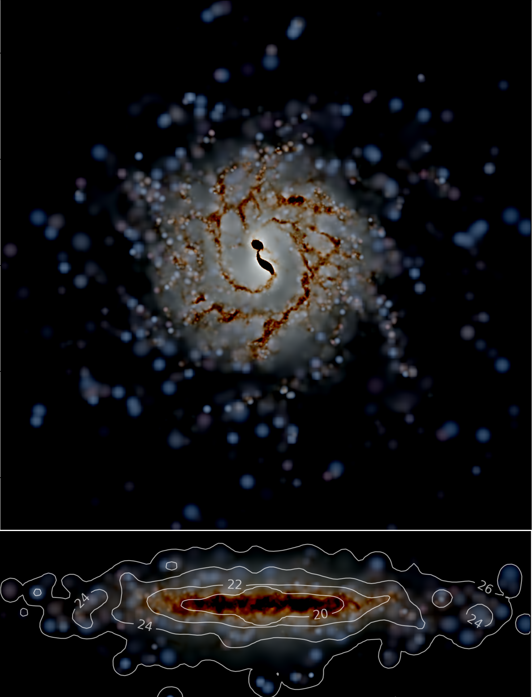
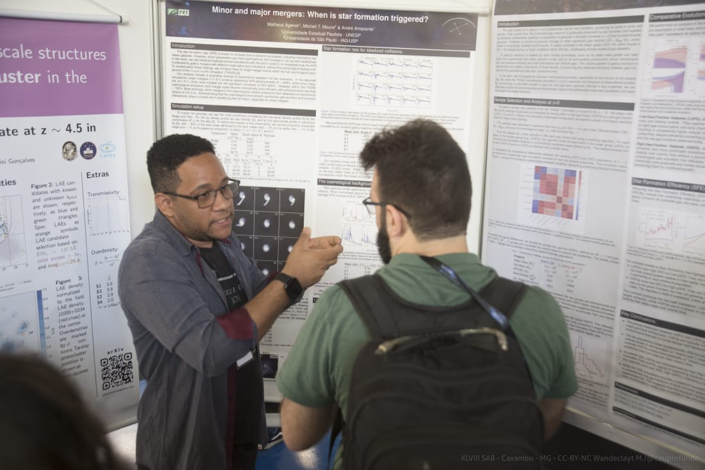
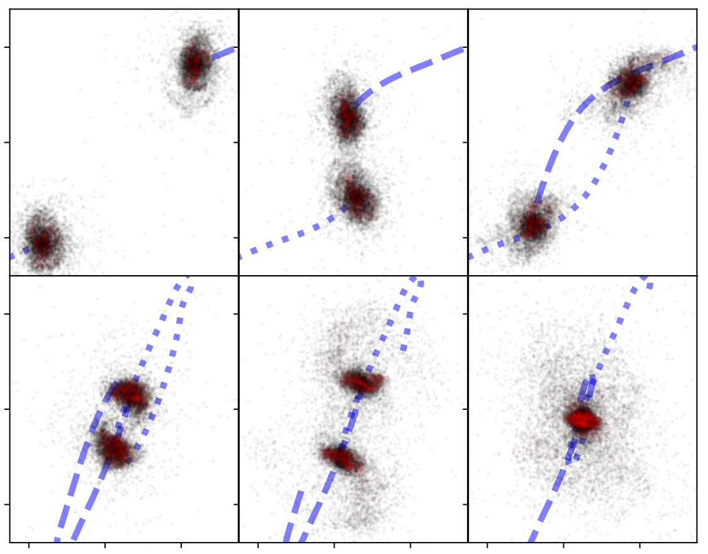

I am Matheus Agenor, an astrophysics student and researcher interested in Galactic
Archaeology, computational modelling, galaxy formation, galaxy evolution, and their
environments. This website gathers short introductions to my work, selected
presentations, tutorials, and notes on Reading Notes that I find relevant.
I completed my undergraduate degree in Physics (2021 to 2025) at São Paulo State
University (UNESP), where I worked on galaxy dynamics and evolution.
I am currently an MSc student in Astrophysics at the National Institute for Space
Research (INPE), working in Galactic Archaeology, with particular focus on the
Sagittarius system.
Current Focus
My current work combines observational and numerical approaches to understand galaxy
evolution across different environments and scales.
Photometric and dynamical studies of the Sagittarius system
Cosmological simulations
Isolated galaxy modelling
InterStellar Medium modeling
Galactic astronomy
Extralactic astronomy
Computational astronomy


Me presenting my two posters on galaxy simulations to my future master's supervisor,
Felipe Almeida-Fernandes
.
News / Updates
[14/04]
A brief discussion of Springel et al. 2020. Go check it out.
Research Portfolio
Projects
Each project opens into a text block with a short explanation, methods, and goals.
A modular implementation path for interstellar medium physics, star formation, and
stellar feedback in large hydrodynamical simulation codes. The goal is to preserve
legacy models while enabling a cleaner, physically motivated, and production-style
alternative path.
This project involves code architecture, snapshot I/O design, chemistry and cooling
backends, timestep consistency, MPI-safe workflows, and validation against controlled
physical tests.
This project focuses on the direct comparison of galaxy interactions in cosmological
and idealized simulations, with emphasis on how orbital configuration, gas content,
and subgrid prescriptions affect star formation histories and structural evolution.
This research investigates the Sagittarius system through photometric and dynamical
methods, connecting stellar populations, chemical trends, and orbital evolution in
order to better understand the assembly history of the Milky Way.
Communication
Selected Talks & Presentations
Some selected presentations related to galaxy dynamics, simulations, and astrophysical modelling.
[2025] · [Galaxy Memoirs: Inferring their past from their present]
Comparison of dark matter profiles in HSB and LSB galaxies
In this work, I studied how dark matter is distributed in the centres of LSB and HSB
galaxies by comparing core-cusp profiles using rotation curves and Bayesian evidence.
[2025] · [XLVIII Reunião Anual da Sociedade Astronômica Brasileira]
Minor and major mergers: When is star formation triggered?
In this work, we performed N-body + hydro simulations seeking to isolate which
parameters in galaxy interactions impact the star formation history, comparing
cosmological and idealized simulations with an effective subgrid model.
[2025] · [XLVIII Reunião Anual da Sociedade Astronômica Brasileira]
Study of the Dynamic Evolution of Comet 12P/Pons-Brooks
In this work, we simulated the orbital evolution of comet 12P, seeking to analyse
its close encounters and isolate the chaotic behaviour associated with the dynamical system.
[2025] · [Course]
Numerical Simulations in Astrophysics
Lectures given on the use of numerical integrators such as RK4, Leapfrog, and IAS15
in dynamical N-body simulations applied to the Solar System and galaxies.
Reading Notes
Reading Notes
Here I keep short notes on Reading Notes that are especially relevant to my work in
computational astrophysics, galaxy formation, and numerical methods. The list
starts with the most recent Reading Notes and moves downward toward the older
foundations they build on.
October 2021
Real and Counterfeit Cores: How Feedback Expands Halos and Disrupts Tracers of Inner Gravitational Potential in Dwarf Galaxies
This is one of the clearest Reading Notes in this reading list for separating agreement in
broad galaxy-scale observables from fidelity to the actual baryonic cycle operating in
the inner halo. Using idealized dwarf-galaxy simulations with the moving-mesh code
AREPO, the authors show that the SMUGGLE model can generate dark-matter cores,
whereas runs based on the older Springel & Hernquist (2003)
effective model remain cuspy under the same initial conditions. The main value of the
paper is that it does not reduce the comparison to a simple “better versus worse”
statement; instead, it asks which physical ingredients are required for a bursty,
time-variable baryonic cycle capable of modifying the central potential.
A representative diagnostic from Jahn et al. (2021), combining inner-slope evolution,
core-size indicators, and star-formation history to show why stellar tracers do not
provide a trivial one-to-one signature of cusp-core transformation.
Read after Marinacci et al. (2019),
Vogelsberger et al. (2013), and
SH03, this paper makes a methodological point that is
highly relevant for subgrid work: reproducing some integrated observables does not by
itself guarantee that the unresolved ISM and feedback cycle are being represented with
the physical detail required for questions such as halo-core formation.
GADGET-4 is best read as the modern public synthesis of the long GADGET lineage. The
paper is not only about performance or software engineering; it also consolidates
developments in gravity, adaptivity, time integration, parallelization, and
hydrodynamics that emerged over nearly two decades of community use. In that sense, it
functions both as a code paper and as a historical summary of how numerical priorities
changed as simulations became larger and physically more ambitious.
The Santa Barbara cluster benchmark is a meaningful figure to keep because it connects
the modern code to one of the classic community validation tests in computational
cosmology.
In dialogue with Hopkins (2012),
GADGET-2 (2005), and
GADGET (2001), the paper is especially interesting
because it preserves continuity with the traditional SPH lineage while also absorbing
lessons from later critiques of mixing and contact discontinuities. For anyone working
with public simulation codes, GADGET-4 is therefore important both technically and
conceptually.
This paper matters less because it introduces a new physical ingredient and more because
it turns an influential numerical framework into a documented public platform. AREPO had
already become central to methodological discussions after the original moving-mesh
paper, but the public release changes the status of the method from a reference in the
literature to a tool that can actually be adopted, tested, compared, and extended by a
wider community.

A representative galaxy-scale application from the public release, useful because it
shows the class of isolated and merger problems that the published module set is
designed to handle in practice.
Read after Marinacci et al. (2019),
Vogelsberger et al. (2013), and
AREPO (2009), this paper marks the
maturation of the moving-mesh program from numerical proposal to public research
infrastructure. It is also an important counterpoint to the public GADGET lineage
represented by GADGET-2.
This paper is especially useful because it separates two questions that are often mixed
together in discussions of subgrid models. The first is whether a model reproduces broad
integrated observables such as stellar-mass growth and the global star-formation
history. The second is whether it generates an interstellar medium whose structure,
phase distribution, and feedback cycle look physically plausible. Marinacci et al. show
clearly that these two issues are related, but not equivalent.
One of the most informative comparisons in the paper: the explicit-feedback model
produces a far more structured and vertically extended ISM than the SH03 run, with
cavities, fountains, and a much less artificially smooth gas distribution.
Read after Vogelsberger et al. (2013),
Hopkins (2012),
Dalla Vecchia & Schaye (2012),
AREPO (2009), and
SH03, this paper becomes a particularly strong reference
for the distinction between effective regulation and realistic ISM structure. A galaxy
may evolve reasonably at the integrated level while still representing the unresolved
gas cycle in a very different physical manner.
This paper is especially valuable because it does not judge feedback only by its ability
to suppress the star-formation rate. Instead, it asks what the feedback prescription
does to the thermo-chemical state of the dense ISM, especially to the molecular phase.
That is the correct question when the goal is not only regulation, but also a physically
interpretable connection between feedback, cooling, and H2 chemistry.
A compact summary of the paper’s main trade-off: different feedback models can regulate
the galaxy differently, but they also leave distinct signatures in the molecular-gas
content and depletion times.
Read after Keller et al. (2014),
Dalla Vecchia & Schaye (2012), and
Stinson et al. (2006), this paper is a strong reminder
that “good global regulation” is not sufficient by itself. A feedback model may produce
acceptable integrated behaviour while distorting the cold molecular phase in ways that
are hard to interpret physically.
Keller et al. push the feedback discussion beyond isolated supernova events and toward
clustered stellar feedback, emphasizing that unresolved feedback regions should not be
treated as single-phase parcels. The superbubble model is attractive because it tries to
preserve the hot interior and the evaporation of colder material into that bubble,
rather than relying on a purely artificial cooling switch.
A representative diagnostic from Keller et al. (2014): the superbubble model is not
only morphologically appealing, but also moves the simulated disc toward a more
realistic star-formation law.
Read after Dalla Vecchia & Schaye (2012),
Stinson et al. (2006), and
SH03, this paper is best understood as a phase-structure
paper. Its main point is that the unresolved hot bubble should retain physical meaning,
because that hot phase is central to how feedback vents out of the disc and regulates
star formation.
Vogelsberger et al. present a galaxy-formation model built for cosmological simulations
with a modern hydrodynamical solver, combining radiative cooling, enrichment, stellar
feedback, black-hole growth, and AGN feedback in a unified framework. What makes the
paper especially useful is that it does not present the model only as a technical recipe;
it evaluates the resulting galaxy population against a broad suite of observables.
One of the key validation figures in the paper: the stellar-mass–halo-mass relation
changes substantially once the full feedback model is activated, showing why this work
became so important for the later Illustris lineage.
Read after AREPO (2009),
GADGET-2 (2005), and
SH03, this paper illustrates a broader shift in the
field: from effective star-formation regulation alone toward larger, more modular
galaxy-formation frameworks calibrated against several observables at once.
This paper is one of the key responses to the criticism that traditional SPH
formulations have difficulty with fluid mixing, contact discontinuities, and some
instability problems. Rather than abandoning SPH, Hopkins derives a broader
Lagrangian framework that preserves conservation while improving the treatment of
interfaces. It is therefore important not only for the results it produces, but also
for the way it reconstructs the equations themselves.
A representative Kelvin–Helmholtz comparison, included because it directly visualizes
the mixing problem that motivated pressure-entropy SPH.
Read after AREPO (2009) and
GADGET-2 (2005), this paper is best seen as a
methodological answer to the growing realization that some “physical” differences
between galaxy simulations could in fact originate in the hydrodynamical formulation
itself.
This is one of the cleanest Reading Notes in the feedback literature because it identifies the
numerical problem with unusual precision. Thermal feedback often fails not because
thermal energy is intrinsically unphysical, but because the injected energy is spread
over too much mass. The resulting temperature jump is too small, the cooling time is
too short, and the feedback energy is radiated away before it can do dynamical work.
The conceptual core of the paper: the comparison between sound-crossing and cooling
times shows when thermal feedback can convert injected energy into motion instead of
losing it immediately to radiation.
Read after GADGET-2 (2005) and
SH03, this paper remains a foundational reference for
making thermal feedback numerically viable without turning cooling off by hand. Even
when one prefers mechanical or multiphase approaches, it is still essential for
understanding why naive thermal injection so often fails.
Comparisons of Different Codes for Galactic N-body Simulations
Athanassoula et al. 2011, A&A, 531, A120
Although this paper is focused on gravity solvers and pure N-body applications rather
than baryonic subgrid physics, it is very useful for placing widely used astrophysical
codes in a broader numerical ecosystem. The comparison is valuable precisely because it
asks not only whether different methods can run, but how they differ in memory use,
timing, scaling, and dynamical accuracy for the same class of problems.
A representative code-comparison diagnostic, emphasizing that different numerical
architectures should be compared through force and phase-space behaviour, not only by
visual morphology.
Read after GADGET-2 (2005) and
GADGET (2001), this paper reinforces an important
practical point: before comparing subgrid physics, one often has to ask whether the
underlying code architecture is well suited to the scientific problem in the first place.
October 2009
E pur si muove: Galilean-invariant Cosmological Hydrodynamical Simulations on a Moving Mesh
This paper is one of the major turning points in computational hydrodynamics for
astrophysics. Springel proposes a moving-mesh finite-volume method based on a Voronoi
tessellation and a Godunov scheme, with the explicit goal of combining the adaptivity of
Lagrangian methods with the shock-capturing strengths of Eulerian approaches. The paper
is motivated by limitations that had become increasingly visible in both traditional SPH
and fixed-grid methods.
The classic Kelvin–Helmholtz comparison from the original AREPO paper, still one of
the clearest visual demonstrations of why moving-mesh methods attracted so much
attention.
Read after GADGET-2 (2005) and
SH03, this paper is important because it changes the
solver itself, and therefore changes the context in which later discussions of galaxy
formation and subgrid realism must be interpreted.
This paper is a classic because it helped define the blastwave-feedback style that
became highly influential in SPH galaxy simulations. The preferred model does not merely
inject stronger feedback in an arbitrary sense; it temporarily suppresses cooling inside
the unresolved remnant, motivated by Sedov–Taylor and snowplow evolution, so that the
feedback remains dynamically important for long enough to alter the disc.
A representative morphology comparison showing the practical impact of the blastwave
model: the disc becomes more structured, turbulent, and vertically extended than in
weaker local-feedback runs.
Read after GADGET-2 (2005) and
SH03, this paper is best understood as a historically
successful workaround for unresolved remnant evolution. Later work would question the
physical cost of the imposed cooling shutoff, but this paper remains fundamental for
understanding why that family of models became so widely used.
GADGET-2 marks the consolidation of the GADGET family into one of the most widely used
public codes in cosmological simulation work. The paper presents a massively parallel
TreeSPH code with adaptive time-stepping, TreePM gravity, and an entropy-conserving SPH
formulation. Beyond performance, what made the code so influential is that it provided a
scalable public framework that could host a very broad range of physical modules.
A representative hydrodynamic test from GADGET-2, useful because it shows that the
code’s importance went well beyond gravity-only cosmological applications.
Read after SH03 and
GADGET (2001), this paper can be seen as the point
where a promising numerical platform became the standard technical home for a large
fraction of later galaxy-formation modeling.
Springel and Hernquist introduce one of the most influential effective models for the
unresolved interstellar medium in cosmological simulations. Star-forming gas is treated
as a hybrid multiphase medium in which cold clouds, hot ambient gas, cooling,
supernova heating, evaporation, enrichment, and winds are coupled through a subgrid
equilibrium framework. Its importance lies in providing a practical way to model star
formation and feedback when the true small-scale ISM structure is far below the
numerical resolution.
The effective multiphase construction at the heart of SH03: above the density
threshold, unresolved star-forming gas is replaced by a pressurized equilibrium model
coupled to a star-formation law.
Built on the computational framework established by GADGET
(2001), SH03 became foundational because it showed how an effective ISM model could
deliver self-regulated star formation in large cosmological runs. It is exactly this
success, however, that later made it such an important target of critique in Reading Notes
concerned with burstiness, multiphase structure, and feedback realism.
This is the natural starting point of the sequence. Springel, Yoshida, and White
present GADGET as a public Tree+SPH code designed for cosmological structure formation
and interacting galaxies, combining collisionless N-body dynamics and gas hydrodynamics
in a massively parallel framework. The emphasis on adaptive timesteps, dynamic range,
and public release was historically important because it helped define what a modern
community code in computational cosmology could look like.
A representative scaling result from the first GADGET paper, included because
parallel performance was already a central design concern in the code’s earliest
public formulation.
In retrospect, this paper is valuable not only for its algorithms, but because it
establishes the platform on top of which much of the later story unfolds. In that
sense, GADGET (2001) is less a final answer than the opening chapter of a long
numerical lineage in galaxy-formation simulations.